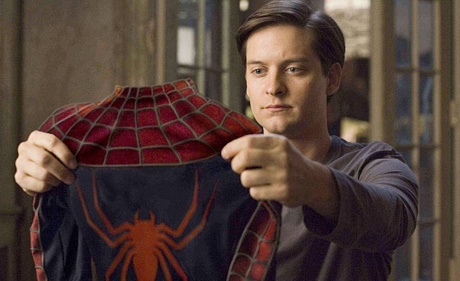

Lançamento: 3 de maio de 2002 (EUA) / 17 de maio de 2002 (Brasil)
Diretor: Sam Raimi
Roteiro: David Koepp
Produtora: Columbia Pictures/Marvel Studios
Elenco principal:
Tobey Maguire: Peter Parker / Homem-Aranha
Kirsten Dunst: Mary Jane Watson
Willem Dafoe: Norman Osborn / Duende Verde
James Franco: Harry Osborn
Rosemary Harris: Tia May
Cliff Robertson: Tio Ben

Peter Parker é um jovem tímido e estudioso que vive com os tios Ben e May. Após ser picado por uma aranha geneticamente modificada, ele ganha poderes sobre-humanos: força, agilidade e a capacidade de escalar paredes. Inicialmente, Peter usa suas habilidades de forma irresponsável, mas a morte trágica do tio Ben o faz compreender que “com grandes poderes vêm grandes responsabilidades”.
Enquanto tenta equilibrar sua vida pessoal e acadêmica, Peter enfrenta Norman Osborn, empresário poderoso que, após um experimento mal sucedido, se transforma no vilão Duende Verde. A batalha entre os dois coloca em risco não apenas Nova York, mas também Mary Jane, o grande amor de Peter.